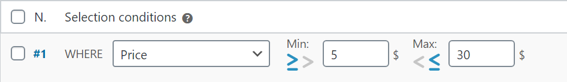
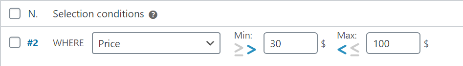

15 conditional selection methods on shipping rules

Fish and Ships for WooCommerce comes with a large range of selection methods, these are:
Price: |
Price products will be taken before taxes. If there is a sale price, it will be taken. |
Weight: |
If the products haven't weight set, 0 will be taken. |
Volume: |
The taken value will be the multiplication of Width x Height x Length. If size has not been seet, 0 will be taken. |
Cart items: |
The product quantity in the cart will be taken. Note that the group-by criteria can be confusing! If you set to non-group then products will be taken one by one, and quantity becomes always 1 (see group-by). |
Min dimension, |
Each of them will consider, respectively, the small, middle and large dimension of the products. It does not matter if the sizes have been entered from small to large, or from large to small, in a product of: 10x15x1 or 15x1x10, the dimension will always be 15, the middle 10, and the small 1. This method always take the products one by one, regardless of the grouping method chosen. If a product have not size set, the value 0 will be taken. |
Length+Width +Height [PRO]: |
The value taken will be the sum of the dimensions. In a product of: 10x15x1, it will be: 10+15+1 = 26. This method always take the products one by one, regardless of the grouping method chosen. If a product have not size set, the value 0 will be taken. |
User role [PRO]: |
Get more info here. |
Greater than / Greater than or equal to & Less than / Less than or equal to
The methods: dimensions, weight, volume, price and number of products in cart display fields of minimum and maximum value.
For all this criteria, you can choose how the MIN and MAX values will be compared, switching to the appropiate symbol on every rule as you need.
In the following table, we are set MIN comparison as GREATER THAN OR EQUAL TO $5, and MAX comparison as LESS THAN OR EQUAL TO $30

| $4.99 | $5.00 | $30.00 | $30.01 |
In the second table, we are set MIN comparison as GREATER THAN $30, and MAX comparison as LESS THAN $100, there is: the equal values will not match this rule:

| $30.00 | $30.01 | $99.99 | $100.00 |
Note that $30.00 match on rule #1 because the MAX field comparison is LESS THAN OR EQUAL TO, and not match rule #2 because the MIN does the comparison with GREATER THAN.
On the other side, $100 not match rule #2 because the MAX field comparison is LESS THAN.
In Category, |
The selected categories will be taken, not his childs. You should include it also if you want it matches. |
Tagged as, |
Product tags will be taken. |
In shipping class, |
Shipping class will be taken. |
Volumetric [PRO]: |
For the volumetric weight two calculations will be done: by weight and volume, and the highest value will be taken. When selecting volumetric weight, a new field appears below the rules table so that you can enter the volumetric weight factor, you should get it from your transport agency: |
How it works? Let's say a volumetric weight factor of 3.5 lb/ft3. Our shop example is configured to work with pounds and inches, converted, is: 0.002 pounds per cubic inch, (here you have an online conversor units for volume/weight):
| Product | Weight | Size | Volume | Volumetric weight | Taken value |
|---|---|---|---|---|---|
| Coat | 3 lbs | 20x20x5 in | 2000 in3 | 2000 * 0.002 = 4 lbs |
4 lbs |
| Laptop | 5 lbs | 16x18x5 in | 1440 in3 | 1440 * 0.002 = 2.88 lbs |
5 lbs |
On lightweight products, the taken value will be the calculated volumetric weight. In heavy products, the weight value will be taken. Always the highest value.
And ... now?
We just saw the selection methods. Now, by learning how shipping costs work, we can make a basic use of Fish and Ships: